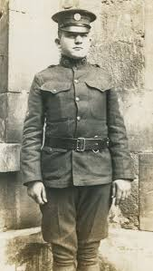
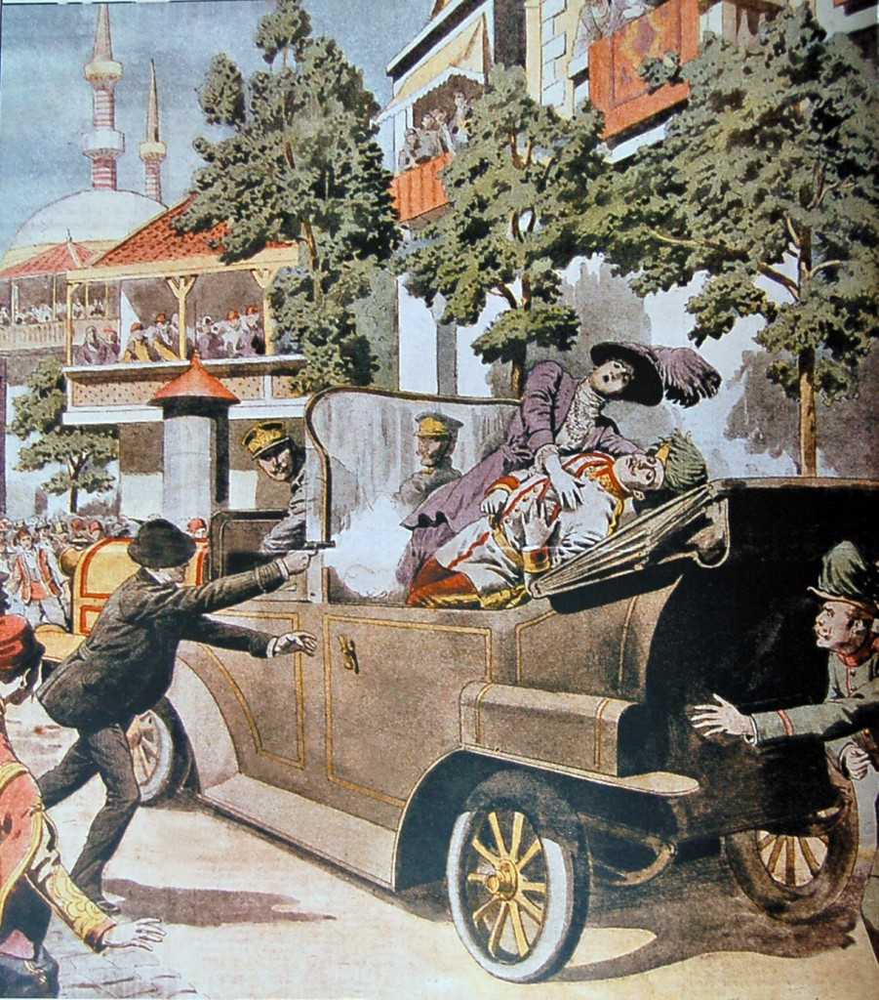
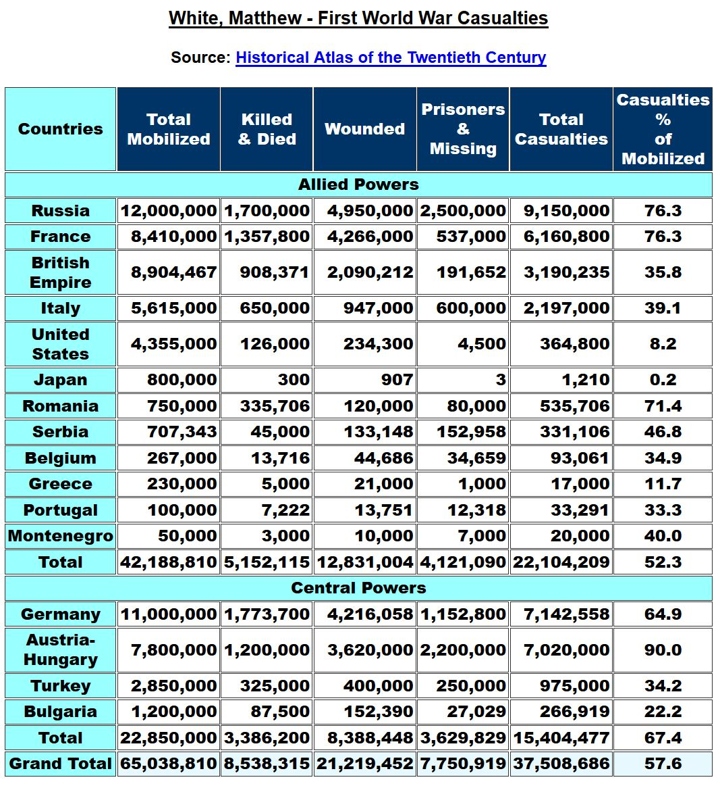
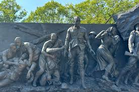

Introduction to World War 1
World War 1, also known as the Great War, spanned from 1914 to 1918 and involved many of the world’s major powers. It was a war of unprecedented scale and destruction, fought on multiple continents. The war reshaped the geopolitical landscape, leading to the downfall of empires and setting the stage for modern international relations.

Causes of World War 1
World War 1 was caused by a combination of long-term factors and immediate triggers. The arms race among European powers created a tense atmosphere. Germany’s naval expansion challenged Britain’s dominance, while France and Germany clashed over territories like Alsace-Lorraine.
The alliance system divided Europe into two opposing camps: the Triple Entente (France, Russia, Britain) and the Triple Alliance (Germany, Austria-Hungary, Italy). These alliances ensured that any localized conflict had the potential to escalate into a full-scale war.
Imperial ambitions further exacerbated tensions. European powers competed for colonies in Africa and Asia, leading to rivalries that extended to Europe. Nationalism also played a crucial role, particularly in the Balkans, where Slavic nationalist movements sought independence from Austro-Hungarian rule.
The immediate trigger for the war was the assassination of Archduke Franz Ferdinand, heir to the Austro-Hungarian throne, on June 28, 1914, by a Serbian nationalist. This event set off a chain reaction, as Austria-Hungary declared war on Serbia, triggering alliances across Europe.

Casualties of World War 1
The human cost of World War 1 was staggering, with approximately 20 million deaths, including 10 million military personnel and 10 million civilians. The conflict also left over 21 million wounded, many of whom suffered permanent disabilities due to the war’s brutal conditions.
Russia suffered the highest military losses, with approximately 2.5 million deaths, followed by Germany at 2 million and France at 1.4 million. Civilian casualties were particularly high in regions subjected to invasions and occupations, such as Belgium and Serbia.
The war’s impact extended beyond human lives. Entire towns and villages were destroyed, and famine and disease claimed additional lives, particularly during and after the conflict’s end.


Effects of World War 1
The end of World War 1 brought significant political, economic, and social changes. Politically, the war led to the collapse of four empires: the German, Austro-Hungarian, Ottoman, and Russian empires. New nations emerged in Europe, including Poland, Czechoslovakia, and Yugoslavia, as part of efforts to redraw borders along ethnic lines.
Economically, the war devastated European economies. Germany faced harsh reparations under the Treaty of Versailles, leading to hyperinflation and economic collapse in the 1920s. The United States emerged as a major global economic power, having financed much of the Allied war effort.
Socially, the war altered traditional gender roles. With men fighting on the frontlines, women entered the workforce in unprecedented numbers, paving the way for future movements toward gender equality. The psychological toll of the war was immense, as soldiers returned with trauma now recognized as post-traumatic stress disorder (PTSD).

Key Battles of World War 1
Battle of the Marne (1914)
Date: September 6–12, 1914
Location: Marne River, France
Casualties: Over 500,000 combined (Allied and German forces)
Winner: Allied Powers
The Battle of the Marne was a pivotal engagement during World War 1, fought between the German Empire and the French and British forces. It marked the end of Germany’s rapid advance into France and halted the German attempt to encircle Paris. This battle is often considered the turning point in the war, as it prevented Germany from achieving a quick victory and forced both sides into a protracted war of attrition. The battle also led to the establishment of the infamous trench warfare that would dominate the Western Front for the remainder of the conflict.

Battle of Verdun (1916)
Date: February 21 – December 18, 1916
Location: Verdun, France
Casualties: Over 700,000 (combined French and German casualties)
Winner: French Victory
The Battle of Verdun was one of the longest and bloodiest battles of World War 1. German forces launched a massive assault against the French defensive lines, hoping to bleed the French army dry. However, the French forces, under the command of General Philippe Pétain, mounted a heroic defense, and the battle became a symbol of French resilience and determination. The battle saw some of the fiercest fighting in history, and both sides endured horrific casualties. Verdun’s symbolic importance to France led to its legacy as a national emblem of wartime sacrifice.

Videos on World War 1
World War 1 Statistics
| Country | Military Deaths | Civilian Deaths | Total Casualties |
|---|---|---|---|
| Russia | 2,500,000 | 1,500,000 | 4,000,000 |
| Germany | 2,037,000 | 700,000 | 2,737,000 |
| France | 1,400,000 | 300,000 | 1,700,000 |
| Austria-Hungary | 1,200,000 | 467,000 | 1,667,000 |